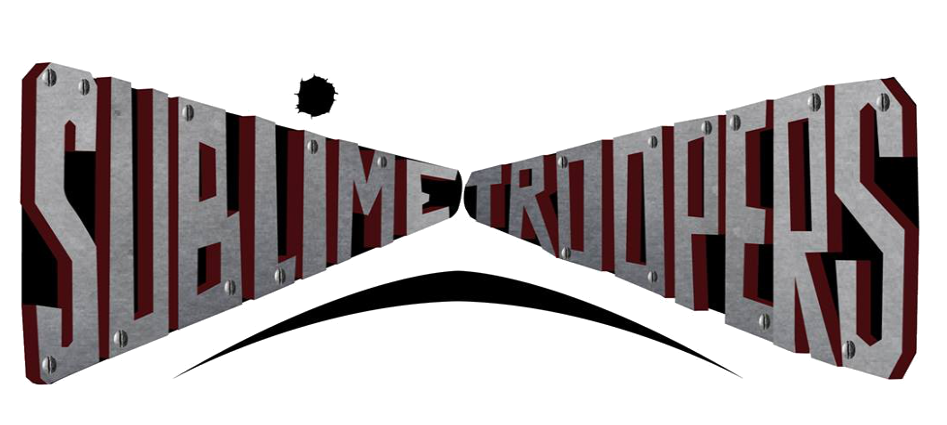

|  | SUBLIME TROOPERS |
OriginesLes Sublime Troopers sont des soldats du rock, mercenaires dévoués à la cause du son lourd et agressif. Créés en 2015 à la suite du désastre du secteur 29, le Capitaine “Trash”, le Major “Muscle” et le colonel “BOB” incarnent la majesté imposante de la musique rock n’roll. Rescapés du 55ème régiment de DIRTY HARD, troupiers spécialisés dans l’éclatement systématique du système auditif, les Sublime Troopers parcourent les champs de bataille désolés et les zones urbaines chaotiques pour imposer les 6 commandements du rock aux impies des temps modernes. Sur scène, les bombardements du Colonel écrasent le gros de la résistance, avant que la précision de jeu du Major, appuyé par les rafales du Capitaine ne convertissent les maigres poches de résistance restantes. “J’ai faim” Col. BOB, avant une offensive |
Trio atypique et explosif, l’enthousiasme des S.T. en action peut paraître effrayant au premier abord, mais le dévouement absolu qu’ils apportent à leur mission ne cesse de fédérer encore et encore. Ils ne se séparent jamais de leur tenue martiale, portée fièrement comme une revendication de leur héritage durement acquis. Ils ne cherchent pas non plus à rejoindre une autre escouade -ni à arrêter leur croisade- soit par mépris des autres, soit par nécessité de se serrer les coudes jusqu’au bout. “Fais comme moi, nique ta mère.” Cpt. Trash, source inconnue Les récentes observations ne permettent pas d’évaluer un quelconque niveau d’activité, cependant une vigilance constante reste de rigueur, afin de parer à toute menace émergente. La contention sera difficile à maintenir si jamais nos estimations se révèlent exactes, car comme aime le préciser le Major Muscle : “On est pas des bons petits soldats”. Terminé. |
| Colonel BOB
Il est considéré comme le bombardier de la formation. Armé de ses baguettes, il guide d'une main de fer sa troupe. Aucun rythme ne lui échappe et il parvient, sans dire un mot, à faire jouer ses compagnons. Seule la faim peut perturber ce Trooper et il ne vaut mieux pas le croiser à ce moment-là. Enfin, c'est à vos risques et périls... |
Captaine Trash
Guitare en main, il fait des prouesses, mais le capitaine a bien d'autres cordes à son arc. C'est en effet avec sa voix qu'il répend le message prôné par les Troopers : mettre à l'honneur le Rock. Il est l'auteur de ses propres chants et il se moque de choquer les civils car sa puissance sur scène transforme tout en champ de bataille! |
Major Muscle
La basse reste l'arme fétiche du Major! Pris à défaut pour l'ironie de son nom, le major sort pourtant de ses gonds dès que le combat des Sublime Troopers commence. Il soutient, de vive voix, les chants de sa troupe et veille au bon fonctionnement du bataillon. Prenez garde car son énergie est communicative et son travail acharné! |
| Sergent Potard
Le Rock fait du bruit grâce à ce Trooper. Son arme : une console et des micros. En reine de la technique, le Sergent Potard élimine le larsen comme personne. Gros avantage pour permettre une meilleure transmission des messages des Troopers, elle n'a pas besoin d'être sur le champ de bataille pour faire des miracles. Vos oreilles lui diront merci. |